This is a fork of Malcolm Barrett’s dagtex that I am working on. It is not yet on CRAN, but in the meantime you can install this development version:
install.packages("remotes")
remotes::install_github("louisahsmith/dagtex")The package converts R code into TikZ code, language for producing vector graphics. If you want to actually see the graphs, either in the viewer window or in an RMarkdown document, you must have TeX installed. The easiest way to do so is with the R package tinytex by Yihui Xie. The R package texPreview is used to show graphs in the viewer, as well as in non-pdf RMarkdown documents.
SWIGs are drawn using Thomas Richardson’s TikZ shapes library. The source code for this library is in inst/tex. Because it is not part of the TikZ distribution, it must be installed manually, or the .tex file must be included in the user’s working directory when it is called. If you have installed LaTeX via tinytex or another TeXLive distribution, you can use the dagtex::install_swigs() function to attempt to place the TikZ library in the appropriate directory on your computer and tell TeX where it is. No guarantees!
Examples
library(dagtex)
dagtex() %>%
add_node("x") %>%
add_node("y") %>%
add_edge("x", "y", is_curved = TRUE)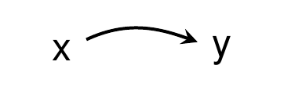
dagtex() %>%
add_node("u1") %>%
add_node("l") %>%
add_node("a") %>%
add_node("y") %>%
add_node("u2", below = "u1") %>%
add_node("u3", below = "l") %>%
add_edge("u1", "l") %>%
add_edge("l", "a") %>%
add_edge("u1", "y", is_curved = TRUE, annotate = annotate_edge("wow")) %>%
add_edge("l", "y", is_curved = TRUE) %>%
add_edge("u2", "l", start_position = "north", end_position = "south") %>%
add_edge("u2", "a", start_position = "north", end_position = "south") %>%
add_edge("u3", "a", start_position = "north", end_position = "south") %>%
add_edge("u3", "y", start_position = "north", end_position = "south")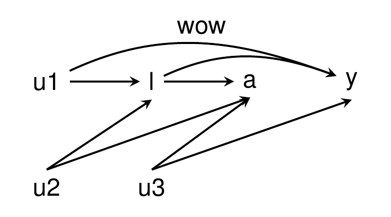
dagtex(node_options = list(shape = "star"),
swig_options = list(gap = "3pt", line_color_upper = "red", split = "h",
fill_color_lower = "pink", line_width_lower = 2.75),
edge_options = list(line_type = "dashed", color = "green")) %>%
add_node("THIS IS A SWIG",
options = list(shape = "forbidden sign", color = "blue", line_width = 4)) %>%
add_swig_node(left = "$X$", right = "$x = 1$") %>%
add_node("$Y^{x = 1}$",
options = list(color = "violet", text = "olive")) %>%
add_edge("$x = 1$", "$Y^{x = 1}$", curve = "up", is_double_arrow = TRUE,
options = list(color = "teal", line_type = "solid")) %>%
add_edge(1, 3, curve_in_degree = 0, curve_out_degree = 40) %>%
add_node("hello", above = 2, options = list(fill = "yellow"))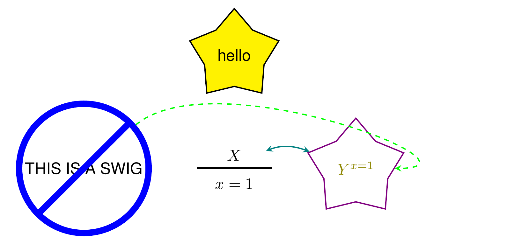
dagtex(node_options = list(shape = "circle")) %>%
add_node("$A_0$") %>%
add_node("$L_1$") %>%
add_node("$A_1$") %>%
add_node("$Y$") %>%
add_many_edges(from = "$A_0$", to = c("$L_1$","$A_1$", "$Y$")) %>%
add_many_edges(from = "$L_1$", to = c("$A_1$", "$Y$")) %>%
add_edge(from = "$A_1$", to = "$Y$")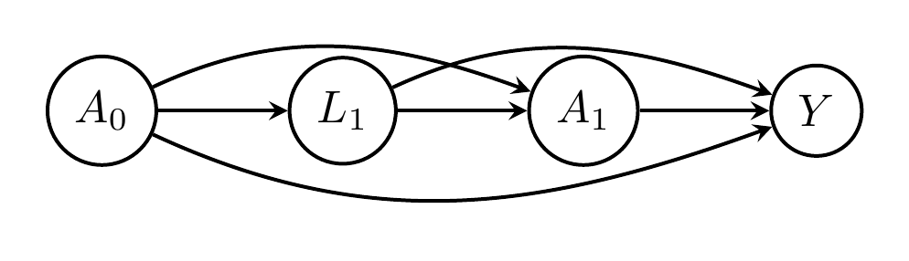
dagtex(node_options = list(shape = "ellipse"),
swig_options = list(gap = "3pt", line_color_right = "red", shape = "ellipse")) %>%
add_many_nodes(list(c("$A_0$", "$a_0$"), "$L_1^{a_0}$", c("$A_1^{a_0}$", "$a_1$"), "$Y^{a_0, a_1}$")) %>%
add_many_edges(from = "$a_0$", to = c("$L_1^{a_0}$","$A_1^{a_0}$", "$Y^{a_0, a_1}$")) %>%
add_many_edges(from = "$L_1^{a_0}$", to = c("$A_1^{a_0}$", "$Y^{a_0, a_1}$")) %>%
add_edge(from = "$a_1$", to = "$Y^{a_0, a_1}$")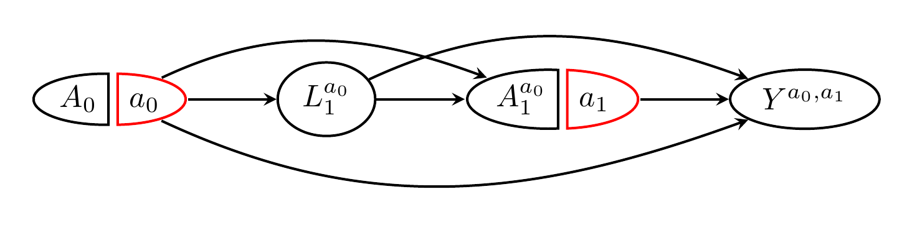
dagtex(swig_options = list(gap = "1pt",
text_right = "red"),
adorn_math = TRUE) %>%
add_many_nodes(list(c("A_0", "a_0"), "L_1^{a_0}", c("A_1^{a_0}", "a_1"), "Y^{a_0, a_1}")) %>%
add_many_edges(from = "a_0", to = c("L_1^{a_0}","A_1^{a_0}", "Y^{a_0, a_1}")) %>%
add_many_edges(from = "L_1^{a_0}", to = c("A_1^{a_0}", "Y^{a_0, a_1}")) %>%
add_edge(from = "a_1", to = "Y^{a_0, a_1}")
dagtex(swig_options = list(gap = "1pt",
text_right = "red"),
adorn_math = TRUE) %>%
add_many_nodes(list(c("A_0", "a_0"),
"L_1",
c("A_1", "a_1"),
"Y")) %>%
add_many_edges(from = "a_0", to = c("L_1","A_1", "Y")) %>%
add_many_edges(from = "L_1", to = c("A_1", "Y")) %>%
add_edge(from = "a_1", to = "Y") %>%
adorn_counterfactuals()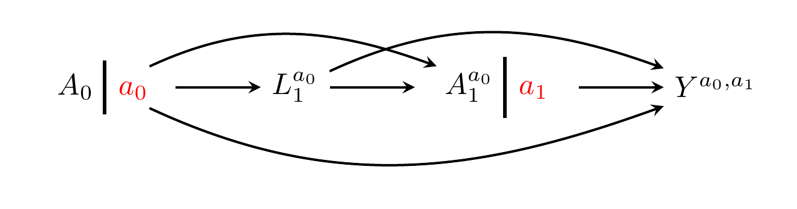
dagtex(swig_options = list(gap = "1pt",
text_right = "red"),
adorn_math = FALSE) %>%
add_many_nodes(list(c("$A_0$", "$a_0$"),
"$L_1$",
c("$A_1$", "$a_1$"),
"$Y$")) %>%
add_many_edges(from = "$a_0$", to = c("$L_1$","$A_1$", "$Y$")) %>%
add_many_edges(from = "$L_1$", to = c("$A_1$", "$Y$")) %>%
add_edge(from = "$a_1$", to = "$Y$") %>%
adorn_counterfactuals()
dagtex(swig_options = list(gap = "1pt", text = "teal",
shape = "circle",
line_color_left = "purple"),
node_options = list(color = "green", shape = "star", fill = "red!30!blue!30"),
edge_options = list(color = "blue", arrowhead = "latex", line_type = "dashed"),
adorn_math = TRUE) %>%
add_swig_node(left = "A_0", right = "a_0",
options = list(text_left = "magenta", line_color_right = "cyan")) %>%
add_swig_node(left = "A_1", right = "a_1",
options = list(gap = "3pt")) %>%
add_node("Y^{a_0, a_1}") %>%
add_edge(from = "a_1", to = "Y^{a_0, a_1}")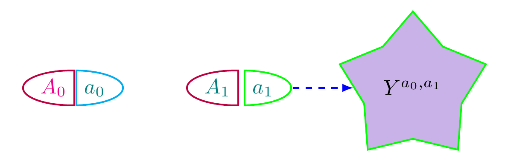
exposure0 <- "A_0"
exposure1 <- "A_1"
confounder1 <- "L_1"
outcome <- "Y"
dagtex(node_options = list(shape = "circle"),
adorn_math = TRUE) %>%
add_many_nodes(c(exposure0, confounder1, exposure1, outcome)) %>%
add_many_edges(from = exposure0,
to = c(confounder1, exposure1, outcome),
annotate = annotate_edge("From $A_0$!", position = "yshift=3pt, xshift=-2pt",
size = "tiny", color = "purple")) %>%
add_many_edges(from = confounder1, to = c(exposure1, outcome)) %>%
add_edge(from = exposure1, to = outcome)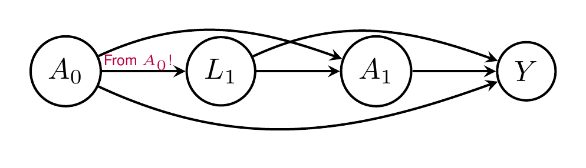
dagtex() %>%
add_node("Pentagon",
options = list(shape = "regular polygon", regular_polygon_sides = 5, color = "orange")) %>%
add_node("Star",
options = list(shape = "star", star_point_ratio = 0.3, star_points = 7, color = "teal",
font = "\\tiny", minimum_size = "10pt")) %>%
add_node("Octagon",
options = list(shape = "regular polygon", regular_polygon_sides = 8, color = "purple"))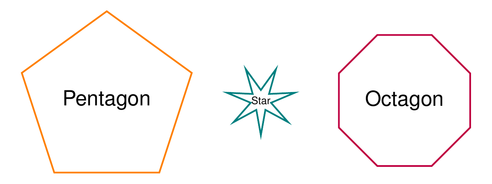
dagtex(help_angles = TRUE, node_options = list(color = "orange")) %>%
add_node("easy") %>%
add_node("as") %>%
add_node("\\pi", adorn_math = TRUE, x = 1, y = -1,
options = list(color = "purple", fill = "teal", shape = "circle"))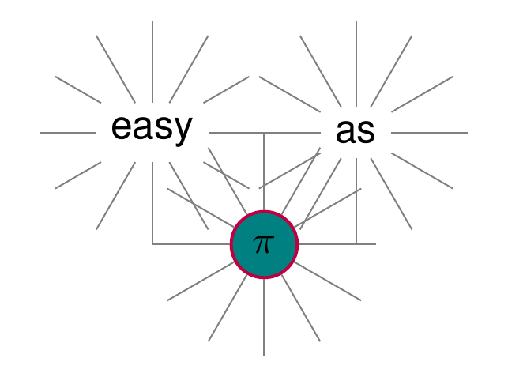
dagtex(edge_options = list(arrowhead = "{Rays[n=5]}")) %>%
add_many_nodes(list(c("A", "a"), "b", c("C", "c"), "d")) %>%
dag_complete(arrow_type = "directed", options = list(line_type = "dotted")) %>%
add_many_edges("a", c("b", "C"), is_headless = TRUE,
options = list(color = "red", line_type = "dashed")) %>%
adorn_counterfactuals(notation = "parens", text_color = "red")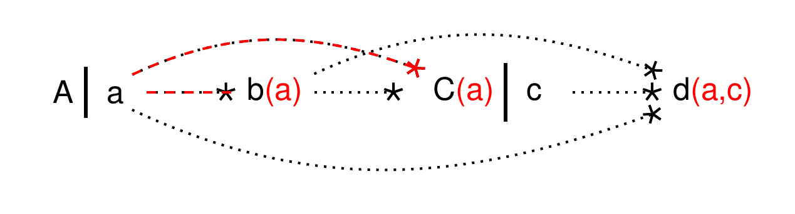
dagtex(adorn_math = TRUE,
swig_options = list(shape = "ellipse", text_right = "red", line_color_right = "red"),
node_options = list(shape = "ellipse", minimum_height = "2em", minimum_width = "5em")) %>%
add_many_nodes(c("A_0", "L_1", "A_1", "Y")) %>%
dag_complete() %>%
swigify(split_nodes = c("A_0", "A_1")) %>%
adorn_counterfactuals(text_color = "red")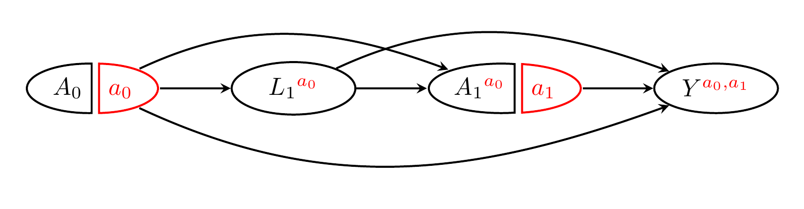
old_opts <- options()
options(dagtex.shape = "circle",
dagtex.adorn_math = TRUE,
dagtex.edge_options = list(line_type = "densely dotted", color = "darkgray", cap = "round", arrowhead = "latex"))
dagtex(adorn_math = TRUE) %>%
add_node("\\alpha^{\\textcolor{red}{y}}") %>%
add_node("\\beta") %>%
add_node("\\gamma") %>%
add_edge(1, "\\beta") %>%
add_edge("\\beta", "\\gamma") %>%
add_edge(1, "\\gamma", is_headless = TRUE, is_curved = TRUE,
start_position = "north", end_position = "north")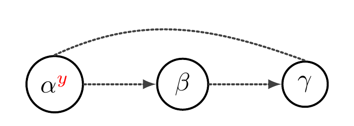
options(old_opts)